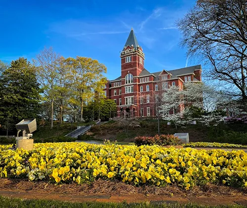
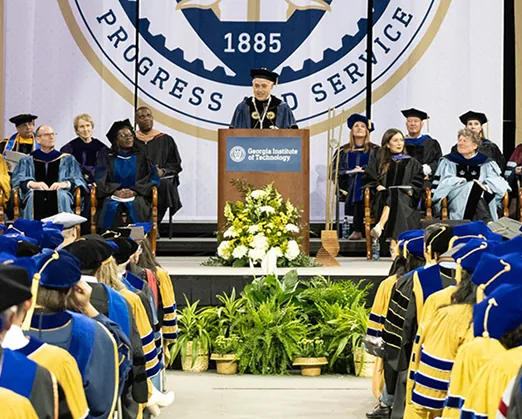
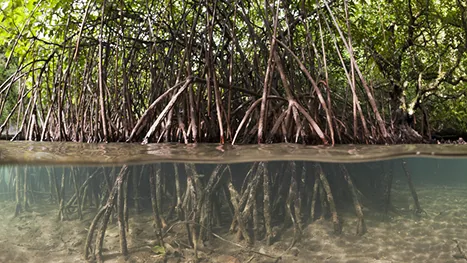
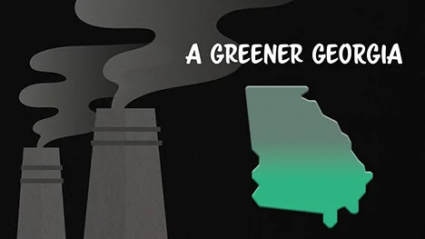
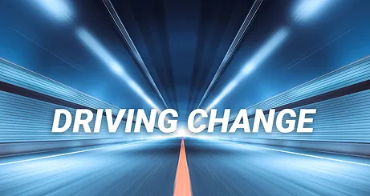

Vision
BBISS — VisionTo grow and mobilize Georgia Tech's knowledge assets to create a sustainable future for all.
The Brook Byers Institute for Sustainable Systems (BBISS) at Georgia Tech advances interdisciplinary sustainability research and education to create a more sustainable future. As a key partner in Georgia Tech's Sustainability Next 2023–2030 Strategic Plan, it connects researchers across disciplines to address global challenges and advance the UN Sustainable Development Goals. Its work focuses on climate science, environmental health, sustainable cities, resource use, equitable development, and sustainability economics. Through research, leadership development, and strategic partnerships, BBISS translates knowledge into practical solutions that benefit society.

BBISS — VisionTo grow and mobilize Georgia Tech's knowledge assets to create a sustainable future for all.

BBISS — MissionTo catalyze high-impact research, develop future leaders, and foster partnerships that translate knowledge into practice.
Georgia Tech researchers are working to deepen the science of climate change and the complex ways in which climate change impacts natural, human, and built systems.
The Georgia Tech sustainability community is committed to conducting rigorous research and implementing practical strategies to preserve and restore ecosystems, safeguard biodiversity, mitigate environmental degradation, and address the negative impacts and cultural burdens of our climate emergency.
Georgia Tech researchers are leaders in the study of large infrastructure systems including energy production and power grids, water systems, transportation and communication networks, and structures and buildings.
Georgia Tech researchers develop methods to recycle and recover resources in ways that are environmentally sustainable and socially just. They pioneer materials that are safer and more sustainable.
The Brook Byers Institute for Sustainable Systems recognizes the intimate connection between research and education and works collaboratively through our faculty and partnerships to advance interdisciplinary education at Georgia Tech and beyond.
By promoting collaborations across the fields of economics, public policy, management, and environmental science and engineering, we foster a deeper understanding of the relationships between economic systems, corporate strategies, and societal impacts.

Researchers at the Georgia Institute of Technology and Yale University are proposing a novel pathway through which coastal ecosystem restoration can permanently capture carbon dioxide from the atmosphere.
Learn more
Georgia's overall greenhouse gases have decreased. The decline in emissions comes against a 10% expansion in the state's economy, showing the potential for reducing emissions while pursuing economic growth, according to the team.
Learn moreGeorgia Tech will be a key partner for the New York Climate Exchange (The Exchange), a first-of-its-kind international center for developing and deploying dynamic solutions to the global climate crisis.
Learn more
Through research and development, policy, and collaboration, Tech experts are working toward finding solutions that will serve as catalysts during this transitionary period for the environment and the way Americans drive.
Learn moreRegents’ Professor and Brook Byers Professor of Sustainable Systems, School of Public Policy
Principal investigator on the Drawdown Georgia research team, which found Georgia’s emissions fell 5% from 2017 to 2021.
Professor, School of Earth and Atmospheric Sciences
Studies carbon cycle dynamics, and is featured in the Georgia Tech and Yale work on how mangroves and seagrasses can capture carbon dioxide.
Associate Professor, School of Computer Science
Researches ultra-wideband sensing and the Internet of Things. The talk below shows how it can capture far less data than video.